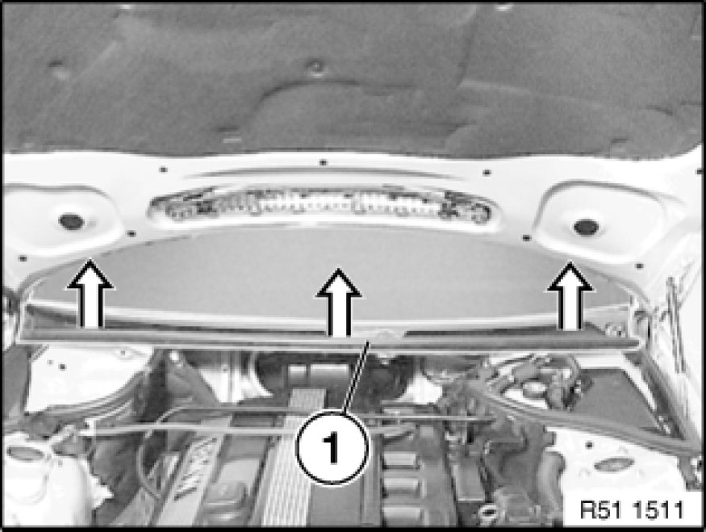
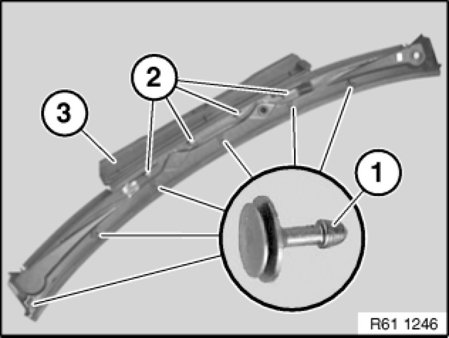
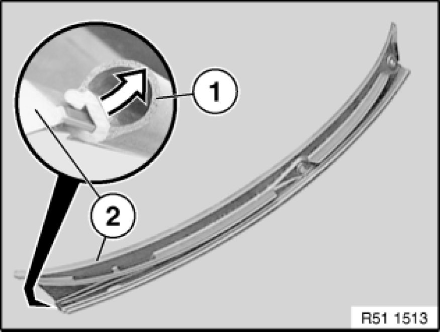

51 13 115 Removing And Installing/Replacing Cowl Panel Cover
51 13 115 - Removing and installing/replacing cowl panel cover

Necessary preliminary tasks:
- Remove both windscreen wiper arms Removing and Installing/Replacing Both Windscreen Wiper Arms.
- Remove microfilter for passenger compartment ventilation Replacing Microfilter for Interior Ventilation

Unclip cover (1) on cowl panel.

Installation:
If necessary, replace faulty clips (1) on cover (3).
Ensure retainers (2) are correctly seated.

Replacement:
If necessary, remove seal (1) from cover (2) for cowl panel.